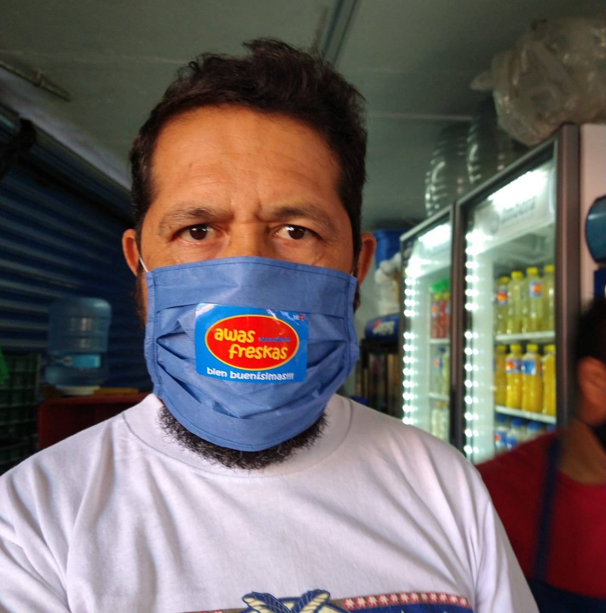

En la década de los 50´s, los hermanos Alcázar inauguraron en la Ciudad de México, justo a espaldas de la cárcel de Lecumberri, produciendo paletas, helados y aguas frescas. Cuarenta años después, ya existían alrededor muchos que compartían con los mexicanos el sabor y la alegría de la tradición. En 2004, comenzó otra aventura en Estados Unidos, ofreciendo consultoría para escoger los mejores locales, consiguiendo los equipos adecuados, adaptando la imagen ideal de las paleterías e implementando manuales de procedimientos para mantener la experiencia con esa receta única y esa espectacular atención, para así, ofrecer una capacitación completa, libre de dudas y desperfectos, Si quieres invertir en los EEUU podemos ayudarte para que te vayas con una visa de inversionista E2 y puedas vivir y trabajar legalmente .
